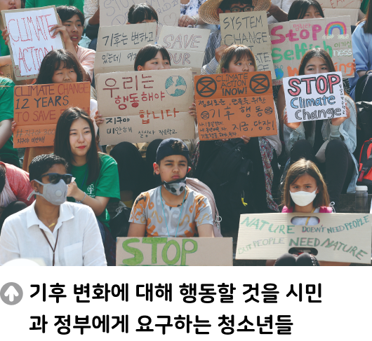

생각폭력의 의미와 유형

국제 연합(UN)이 기후위기를 포함한 환경 위기를 아이들에 대한 구조적 폭력으로 규정하고 기후 변화의 최전선에서 싸우는 아이들을 지원하고 나섰다. 8월 28일 국제 05 연합 아동 권리 위원회는 이날 아동의 권리 보호를 위한 주요 협약에 기후 변화는 구 조적 폭력이라는 내용을 명시하였다. 또한 미국에서는 청소년 16명이 정부에게 화석 연료 사용 정책으로 인해 깨끗하고 건강한 환경을 유지·개선하는 데 실패한 것에 대 해 소송을 제기하였고, 승소 판결을 받았다.
- 『연합뉴스』, 2023. 8. 29.
● 우리 사회에서 발생하는 구조적 폭력의 사례에는 또 무엇이 있을까?
우리 사회에서 발생하는 구조적 폭력에는 인종 차별, 성 차별, 빈곤 등이 있다.